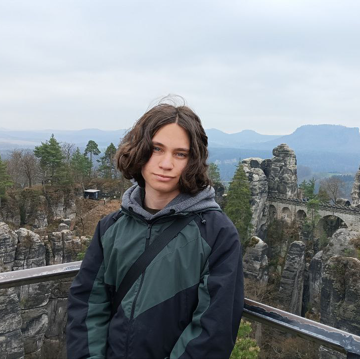

Студент / Учасник програми SoftServe
НТУ "Дніпровська політехніка"
Вітаю! Я студент та розробник, який спеціалізується на створенні веб-додатків і ботів. ні подобається розбиратися в тому, як усе влаштовано: від розробки вебсайтів до створення ботів для Discord та Telegram на замовлення. Я завжди відкритий до нових викликів, чи то участь у різних програмах/конкурсах, виступах на різні теми, чи то вивчення іноземних мов. Прагну створювати не лише цікаві, а й практичні рішення, поєднуючи написання коду з роботою над собою.